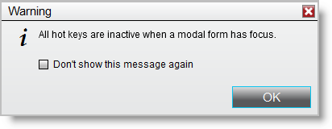
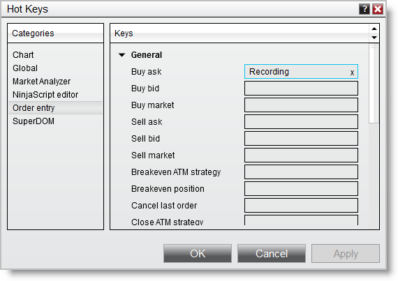
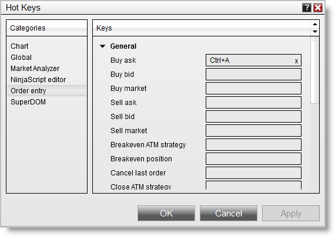
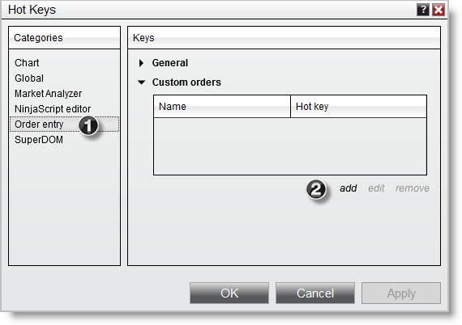
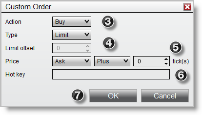

|
<< Click to Display Table of Contents >> Trading with Hot Keys |


|
Trading with Hot Keys
|
<< Click to Display Table of Contents >> Trading with Hot Keys |
|
Hot Keys can be assigned to order actions and used to place orders within NinjaTrader order entry windows.
 Understanding the risks in using Hot Keys for order entry
Understanding the risks in using Hot Keys for order entry
Hot Keys are a powerful and versatile trading tool. However, misuse can lead to unexpected trades and therefore loss of money. There are several features of the Hot Keys that you should become familiar with before using them for order entry to limit the risk of unexpected order placement.
Active WindowYou must always be aware of the current active window when using Hot Keys for order entry. Order entry Hot Keys are window sensitive and will only execute an action to the active order entry window. Please see the "Understanding where Hot Key order entry is active" section on this page for more information on this topic.
Using the incorrect Hot KeyIt is imperative that you know what Hot Key performs what action. It is easy to confuse Ctrl+B with Shift +B which may both enter different types of orders. For this reason, we recommend printing your Hot Keys after assigning for easy reference. Please see the "How to print your Hot Keys for reference" section of the Working with Hot Keys page of the Help Guide.
When Hot Keys are inactiveWhen you close the Hot Key window, you will see the message shown below. A modal form is a window that is always on top and always selected. (An example is the modal form message window itself.) It is important to understand that ALL Hot Keys are inactive any time a model form window is open.
 |
 How to enable Hot Key order entry
How to enable Hot Key order entry
To enable order entry Hot KeysFrom within the Control Center window select the Tools menu and then select the menu name Options. Once in the Trading category, select "Use order entry hot keys"
Assigning Hot Keys1. Move your mouse over the action field where you want your Hot Key assigned, "Click to record hot key" should display 2. Left mouse click on the field to begin recording 3. Use the keyboard to select the Hot Key combination 4. Recording will finish as you input the hot key on your keyboard or press esc to cancel the recording
 |
 Understanding where Hot Key order entry is active
Understanding where Hot Key order entry is active
Order Entry Hot Keys will only submit from the the active order entry window. This is important to understand, especially if using multiple order entry windows. Order Entry WindowsBelow is a list of all of the order entry windows available in NinjaTrader. Identifying the Active WindowThe active window is usually the window that was last clicked on and has the top most view. You will also notice that the active window's close button in the upper right hand corner is red compared to an inactive window that has a grey close button.
The screen capture below to the left shows the SuperDOM with ES 06-14 selected as the active window whereas the screen capture in the right shows the SuperDOM with NQ 06-14 selected and active. In the left screenshot any order Hot Keys would be submitted to the ES 06-14. In the right screenshot any order Hot Keys would be submitted to the NQ 06-14.
|
 Pre-defined order actions and definitions
Pre-defined order actions and definitions
Pre-defined order actions
|
 How to create custom order actions
How to create custom order actions
NinjaTrader allows you to create custom order actions within the Order Entry section of the Hot Key window.


To create a Custom Order action with an associated Hot Key1.Select the Order Entry category of the Hot Key window. 2.Left click "add". 3.Select an Action. 4.Select an Order type (Limit offset allows you to enter the number of ticks your limit order will be submitted away from the stop order when using a StopLimit Order type). 5.Select the price the order will be submitted at. You can choose a number of ticks above (Plus) or below (Minus) the current Ask or Bid. 6.Select the hot key to use to submit the Custom Order. 7.Press the OK button.
To remove Custom Order actionsLeft click the Custom Order and select "remove" |